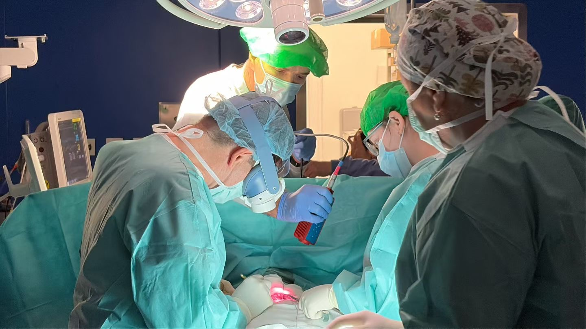
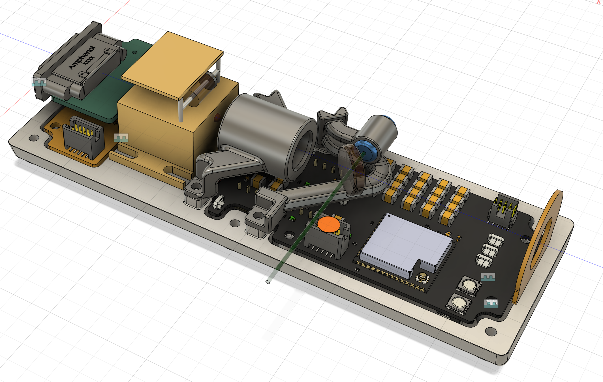
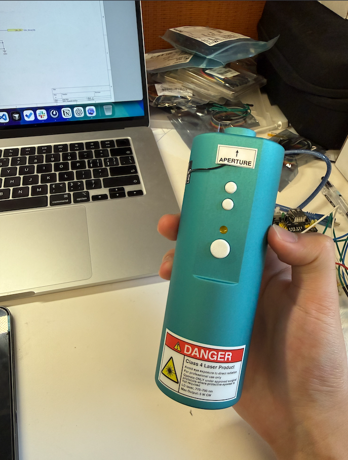
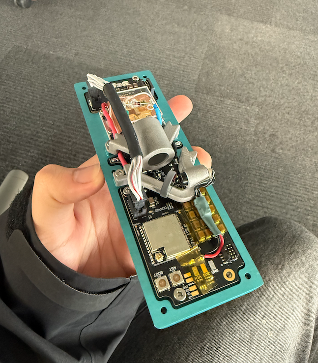
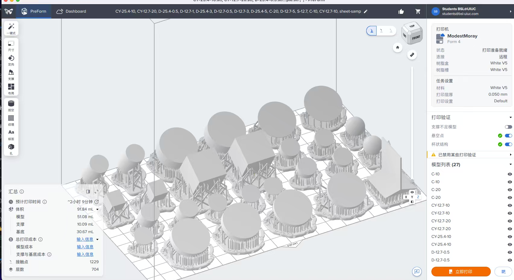
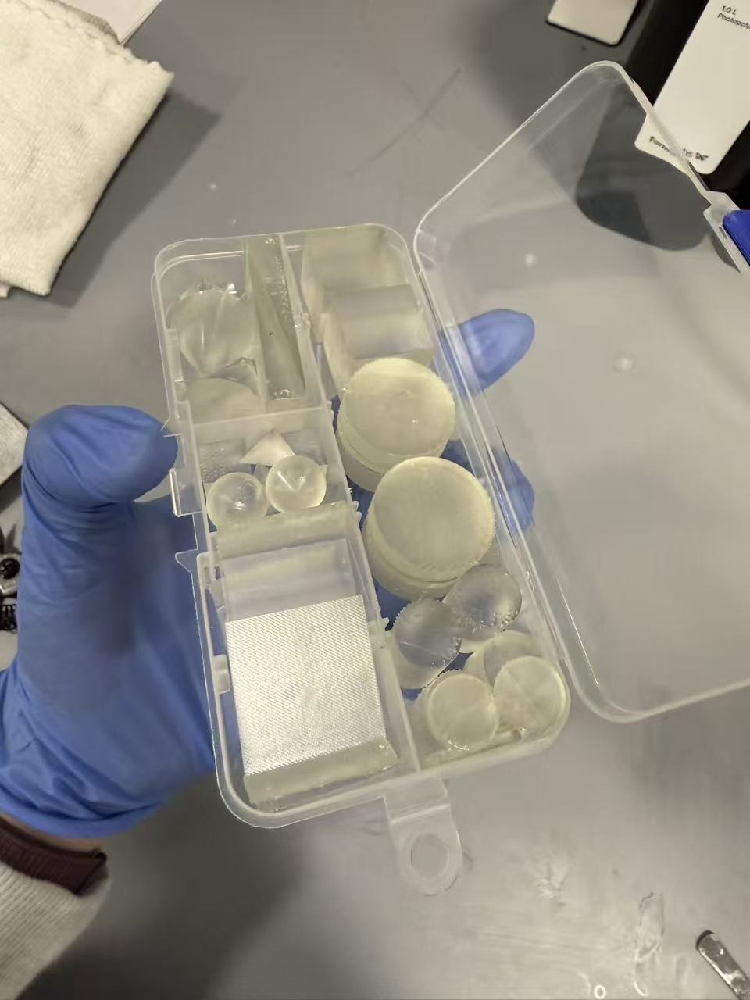

AR-Guided Tumor Imaging System for Surgical Navigation
Our lab is developing an augmented reality tumor imaging system that combines wavelength-specific optical illumination, biomedical imaging, real-time image processing, and AR visualization to assist surgeons in identifying tumor regions and boundaries during surgery.
Project Overview
Our lab is developing an augmented reality tumor imaging system for intraoperative surgical guidance. The goal of this project is to help surgeons identify tumor locations and boundaries in real time during tumor resection. By combining wavelength-specific optical illumination, biomedical imaging sensors, image processing, and AR-based visualization, the system aims to provide intuitive visual guidance directly in the surgical field.
The system is built around the optical differences between tumor tissue and normal tissue. Under selected illumination wavelengths, biological tissues may exhibit different absorption, scattering, reflection, or fluorescence responses. By capturing and enhancing these optical signals, the system can improve tissue contrast and support real-time tumor localization. The long-term goal is to build an integrated surgical navigation pipeline from optical excitation and image acquisition to image analysis and AR visualization.

Laser Illumination Control System
One part of my work focuses on the laser illumination subsystem, which provides controlled optical excitation for the imaging pipeline. The illumination device needs to be portable, low-cost, and easy to operate, especially for potential deployment in resource-limited medical environments. In this subproject, I worked on the embedded control system and device-level integration for the laser illumination platform.
I developed ESP32-based firmware using FreeRTOS to support laser control, device state management, user interaction, power-domain coordination, and real-time system monitoring. I also implemented safety-related control logic, including abnormal-state detection and safety interlock mechanisms, to improve the stability and reliability of the device in biomedical imaging scenarios.



3D-Printed Optical Tissue Phantoms
Another part of my work involves developing optical tissue phantoms for system calibration and validation. Tissue phantoms are artificial tissue-like models that simulate selected optical properties of biological tissue, such as absorption and scattering. They provide a repeatable and controllable testing platform for evaluating illumination hardware, imaging sensors, and image processing methods before experiments with real biological samples.
In this subproject, I designed and fabricated resin-based optical phantoms using 3D printing. I tuned their optical responses by adding polystyrene beads to control scattering and optical dyes to adjust absorption. I also worked on material preparation, vacuum degassing, sample printing, and iterative testing with lab imaging equipment, with the goal of producing standardized tissue-like targets for bio-optical imaging experiments.

